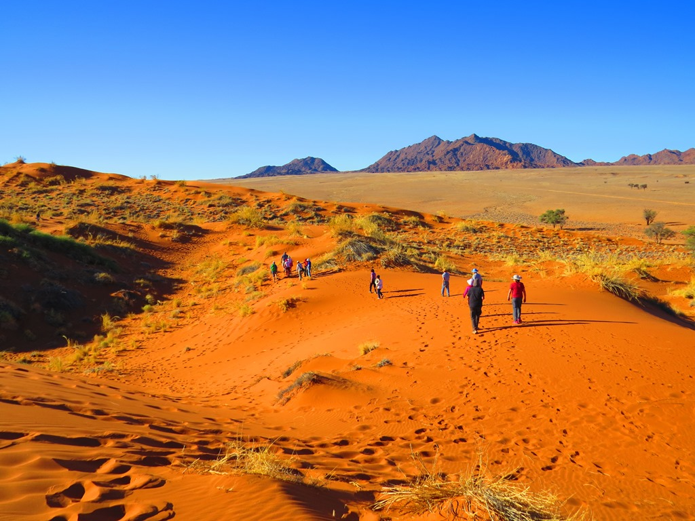

Localitatea Dăbuleni devine prima zonă de deşert din...
2020.09.24 10:02

RTV VIDEO RTV LIVE ÎNREGISTRĂRI RTV MOBI POLITICA SOCIETATE ECONOMIE JUSTITIE EDUCATIE SANATATE VREMEA EXTERN LIFE SPORT HOROSCOP SCITECH Articol publicat in: Societate
Localitatea Dăbuleni devine prima zonă de deşert din România! Agricultorii vor cultiva kiwi, curmale şi măslini
Publicat: Vineri, 31 Ianuarie 2020 14:58 // Actualizat: Vineri, 31 Ianuarie 2020 15:07 // Sursa: romaniatv.net
Localitatea Dăbuleni ar putea deveni prima zonă de deșert a României. În condițiile în care nu numai pepenii ci și culturile de kiwi, curmale sau măslini ar putea să umple solul nisipos. Î n c âțiva ani agricultorii din sudul ţării vor renunța la culturile clasice în favoarea celor exotice.
Comenteaza
La stațiunea de Cercetare din Dăbuleni terenul extrem de nisipos este pus în valoare de niște culturi la care nimeni nu s-ar fi gândit acum zeci de ani. "Au fost introduse câteva specii. Una dintre ele este kiwi. Aici o altă specie introdusă, maslinul. După cum vedeți, majoritatea necesită protejare pe timpul iernii, contra gerului și a rozătoarelor. Măslinul a avut o creștere foarte bună. La anul sperăm să avem producție", a declarat Drăghici Iulian, cercetător Stațiunea Dăbuleni, potrvit Digi24.ro.
Citeşte şi: A nins în deşert! Fenomen meteo extrem în Arabia Saudită VIDEO
Dincolo de mândrie, oamenii sunt îngrijorați că de la an la an precipitațiile sunt din ce în ce mai puține.
Citeşte şi: Furtuni de praf monstruoase au întunecat Soarele. S-a făcut întuneric în plină zi VIDEO
Specialiștii spun că numai anul trecut în zona de Sud în anumite luni precipitațiile au fost cu 30 de litri pe metru pătrat mai puține față de o perioadă normală. Dar și cu temperaturi mai mari cu 2-4 grade față de media normală a lunii respective. În momentul de față peste 100.000 de hectare din sudul ţării s-au transformat în deșert.
Sursă foto: Digi24.ro
loading... Comenteaza // Vezi comentarii Citeste mai mult despre: agricultori deşert kiwi localitatea dabuleni măslini secetă Loading... Daca ti-a placut articolul, urmareste RomaniaTV.NET pe facebook sau twitter . DE ULTIMĂ ORĂ ROMÂNIATV.NET Şefii Jandarmeriei Române, audiaţi la DNA. Acuzaţii GRAVE... 24 sep, 10:00 0 Legea care înlocuieşte educaţia sexuală în şcoli cu... 24 sep, 09:09 0 Alexandru Rafila: "Comisia Europeană şi-a făcut treaba,... 24 sep, 10:22 0 Investitorii germani, avertisment pentru România: Mărirea... 24 sep, 07:45 0 Prognoza meteo pentru ziua alegerilor locale. Cum ar... 24 sep, 10:20 0 WOWBIZ.RO Claudia Puican i-a dat umilință lui Armin Nicoară! Ce i-a... WOWBIZ.RO Să vezi și să nu crezi! În ce ipostaze compromițătoare a... WOWBIZ.RO Cine pune flori la mormântul Ilenei Ciuculete după... StiriNebune.ro George Ogăraru, despre clipele cumplite de la accidentul... StiriNebune.ro StiriNebune.ro EVZ.RO Probleme mari la graniță. Un nou scandal cu Poliția în... EVZ.RO Întâlnire de gradul zero. Ce i-a spus Dincă mamei Luizei... EVZ.RO Mască obligatorie nonstop! Cum, unde, când? Atenţie, este... ŞTIRI CANCAN.RO Ce mesaje compromițătoare a descoperit Alin Oprea. Cine... 0 Costumul de baie i-a jucat feste Madalinei Ghenea!... 0 HUFF.RO Vestea zilei în showibz. A NĂSCUT! FELICITĂRI HUFF.RO Lidia Buble se gândește la împăcare. Ce i-a transmis lui... HUFF.RO Cum obții ajutor social și ce se va întâmpla cu el în 2021 CAPITAL.RO Cutremur total la CARACAL! Au dispărut probe. Ce se... CAPITAL.RO Profeția CUMPLITĂ despre România! Se întâmplă în maximum... CAPITAL.RO Decizie crucială la CCR! Zi super importantă pentru... SPYNEWS.RO Mama Roxanei Dobre vrea să țină pasul cu fiica sa! A... SPYNEWS.RO Ilie Năstase are grijă și de copii, și de prieteni... în... SPYNEWS.RO „Bombardier” din România, show pervers, în pușcărie /... OBIECTIV.INFO Sorin Ovidiu Vîntu a fost externat. Medicii: \"Evoluţia... OBIECTIV.INFO Rabla pentru electrocasnice 2020. Câţi bani poţi lua... OBIECTIV.INFO Manager spital suport-COVID: Avem mulţi pacienţi care au... FEMINIS.RO INCREDIBIL! Există o explicaţie ŞTIINŢIFICĂ pentru... NOOBZ.RO Telefonul lui Jeff Bezos de la Amazon a fost ”spart de un... NOOBZ.RO Noua interfață Facebook cu mod întunecat e aici JURNALUL.RO Horoscop octombrie 2020. Luna octombrie este despre... JURNALUL.RO Horoscop săptămânal, 21 - 27 septembrie. Fecioarele se... JURNALUL.RO Demența birocratică din timpul „ritualului” de... B365.RO Proiect: Vouchere de 50 de lei de persoană pentru... B365.RO Incineratorul de nămol este aproape de finalizare: Este o... B365.RO Anunțul Ministerului Mediului privind poluarea din... STIRITV.RO Vecinii Cristinei Țopescu au vorbit, n-au mai suportat și... STIRITV.RO Ce au găsit ANCHETATORII la casa Cristinei Țopescu! A... STIRITV.RO FENOMEN RAR la noapte, care SCHIMBĂ TOT! Cum sunt... SFATULPARINTILOR.RO Horoscop zilnic: Horoscopul zilei de azi JOI 24... SFATULPARINTILOR.RO Mesajul ZILEI pentru zodii de la Fecioara Maria, regina... SFATULPARINTILOR.RO Zodiac chinezesc: Ce zodie esti dupa ora nasterii FEMINIS.RO Nu se ştia ASTA până acum despre banalul PARACETAMOL - Ce... FEMINIS.RO Poftă de PIPER? Ce înseamnă, de fapt, când organismul... FEMINIS.RO Marte RETROGRAD 2020 - Ce să faci şi ce să NU faci în... REDACTIA.RO Ce fac și cu ce se ocupă fetele lui Vadim Tudor. Fiica... REDACTIA.RO UIMITOR! Aceste fetițe s-au născut din aceeași mamă și în... REDACTIA.RO Lidia Buble a scos piesa „Vino du-te” feat VUNK. E o... Fabricat in Romania Un nou focar in Romania. Orasul intra in Scenariul Rosu.... Fabricat in Romania Daniela Cusnir, condusa pe ultimul drum. Cum a fost... Fabricat in Romania O noua epidemie loveste China. Bacteria a fost scapata... COMENTARII
1 EUR 4.8641 RON 24 Sep noapte 15 ° zi 30 ° CELE MAI NOI ȘTIRI DIN ECONOMICA.NET Este calamitate în România! Alimente vor dispărea de pe rafturi FANATIK.RO INCREDIBIL! Candidat la alegerile locale, AMENINTAT cu MOARTEA de mafia locala. ”Aici e zona noastra, retrage-te!” Simona Halep nu se astepta la asta! Parintii ei se opun casatoriei cu Toni Iuruc. Motivul e ca... Ce s-a întamplat, de fapt, cu cadavrele sotilor Ceausescu. Dezvaluirea care schimba tot. Au fost bagate in saci si... Stirea momentului despre Nadia Comaneci. Da, e adevarat! Nimeni nu se astepta la asta KANALD.RO Florentina, jignită în ultimul hal de fanii Biancăi. Ce comentarii a primit: "Ce față de travestită" Curs valutar BNR, joi 24 septembrie 2020: Leul, la minimul istoric fata de euro! Prognoza meteo ANM pentru joi, 24 septembrie. Vremea, în continuare foarte caldă! Vezi online serialul "Prețul fericirii" subtitrat în limba română - Episodul 16, sezonul 3, miercuri, 23 septembrie - VIDEO HUFF.RO Vestea zilei în showibz. A NĂSCUT! FELICITĂRI Lidia Buble se gândește la împăcare. Ce i-a transmis lui Răzvan Cum obții ajutor social și ce se va întâmpla cu el în 2021 CAPITAL.RO Cutremur total la CARACAL! Au dispărut probe. Ce se întâmplă chiar acum cu Gheorghe Dincă Profeția CUMPLITĂ despre România! Se întâmplă în maximum doi ani: Lucrurile încep să se vadă Decizie crucială la CCR! Zi super importantă pentru milioane de români CELE MAI NOI ȘTIRI Alexandru Rafila: "Comisia Europeană şi-a făcut treaba, România va primi vaccinul anti-COVID" Prognoza meteo pentru ziua alegerilor locale. Cum ar putea influenţa vremea votul românilor IPS Teodosie a apărut într-un clip de prezentare a unui local pentru parastase. Arhiepiscopia Tomisului: "A binecuvântat acest spaţiu" Mii de britanici vor fi infectaţi deliberat cu coronavirus. Experiment revoluţionar al guvernului de la Londra Robert Negoiţă, plângere penală împotriva prefectului Capitalei. "Să răspundă ce legătură are cu mafia retrocedărilor din Sectorul 3" Scandal violent într-o primărie din judeţul Iaşi! Primăriţa l-a luat la bătaie pe contracandidatul său la alegerile locale VIDEO Doi profesori din Bucureşti, soţ şi soţie, sunt infectaţi cu noul coronavirus! Bărbatul este în stare foarte gravă Percheziţii de amploare în Bucureşti şi în alte judeţe. Prejudiciu uriaş într-un dosar de evaziune fiscală Legea care înlocuieşte educaţia sexuală în şcoli cu educaţia sanitară, dezbătută de CCR. De ce a fost atacată de Klaus Iohannis CORONAVIRUS. Nou set de restricţii în Israel, de vineri vor fi oprite activităţile în toate sectoarele non-esenţiale Răsturnare de situaţie în dosarul Caracal. Documentul care poate schimba toată ancheta poliţiştilor Cosmarul prin care a trecut o fetiţă de 12 ani din Argeş! A fost agresată în mai multe rânduri de tatăl şi fratele mai mare Maşină distrusă de tren în judeţul Bacău. Şoferul autoturismului a fost rănit FOTO Dennis Man are COVID-19, iar Florin Tănase a ieşit din nou POZITIV. Şanse mici să se mai joace FCSB - Slovan Liberec Oraşul din Italia în care masca e obligatorie 24 de ore din 24. "Suntem în faţa unui potenţial focar de contaminare" JURNALUL.RO Horoscop octombrie 2020. Luna octombrie este despre schimbări și energie pozitivă Horoscop săptămânal, 21 - 27 septembrie. Fecioarele se concentrează pe viața profesională Demența birocratică din timpul „ritualului” de pensionare. Dosarul, mai scump ca prima pensie Luna Nouă în Fecioară. Trei ritualuri pe care trebuie să le faci după 17 septembrie, pentru o viață mai sănătoasă FEMINIS.RO INCREDIBIL! Există o explicaţie ŞTIINŢIFICĂ pentru credinţa în DUMNEZEU Nu se ştia ASTA până acum despre banalul PARACETAMOL - Ce păţeşti când îl iei pentru dureri şi alte afecţiuni Poftă de PIPER? Ce înseamnă, de fapt, când organismul cere acest condiment Marte RETROGRAD 2020 - Ce să faci şi ce să NU faci în această perioadă StiriNebune.ro Narcis Răducan este puternic afectat de coronavirus: „Situația e dramatică! Am pierdut 90 la sută din afacere!” Cum luptă Arabia Saudită cu pandemia de coronavirus. Razvan Lucescu: "Au luat nişte măsuri mult mai rapide" FCSB. Gigi Becali, ajutor pentru Spitalul „Matei Balș”: „Am sunat la fabrica de cămăși și le-am cerut să facă doar măști și halate” NOOBZ.RO Telefonul lui Jeff Bezos de la Amazon a fost ”spart de un prinț” Noua interfață Facebook cu mod întunecat e aici Cum să-ți securizezi contul de WhatsApp împotriva hacking-ului social KFETELE.RO Sfatul zilei de astăzi, joi 24 septembrie 2020. Leii fac pace cu trecutul Ce înseamnă, de fapt, echinocțiul de toamnă. Ce se întâmplă pe 22 septembrie 2020. Toate zodiile sunt afectate Se dau bani pentru români! Cine poate primi 15000 de euro nerambursabili DIVAHAIR.RO Transformare incredibilă! Oamenii de abia o mai recunosc pe Ramona Gabor, în urma operațiilor estetice. Ți se mai pare că seamănă cu originalul? Johnny Depp o acuză pe Amber Heard ca l-ar fi bătut Venus intră în Berbec pe 7 februarie: cum este influențată viața zodiilor Nabadaiosul Marte intra in Capricorn: zodiile sunt gata sa o ia de la capat YVE.RO Horoscop 24 Septembrie 2020: astăzi Săgetătorii au de luat o decizie importantă Horoscop Zilnic Joi 24 Septembrie 2020: Conflictul interior cu care te confrunți azi are legătură cu obiectivele din viitor Oana Roman a fost umilită de o învățătoare, pe vremea când era la școală Răzvan Simion are o nouă iubită 24 H CELE MAI CITITE ȘTIRI TRAGEDIE în familia unuia dintre cei mai cunoscuţi impresari români. Fiica sa a decedat. "Doamne, de ce nu m-ai luat pe mine?" BILANŢ CORONAVIRUS 23 SEPTEMBRIE. Record de cazuri noi: 1.767 infectări şi 47 decese în ultimele 24 de ore. 498 de pacienţi la ATI Persoanele care vin în România din ţările de pe "lista galbenă" obligate să prezinte test negativ de COVID ca să scape de carantină Traian Băsescu se predă cu câteva zile înainte de alegeri? "Cred că Nicuşor va ajunge primar" Ajutorul social va CREŞTE. Câţi bani va primi un asistat social care NU munceşte Andrei Caramitru, atac devastator la Traian Băsescu: "Bea în exces de disperare. A ajuns iepurele unei panarame" Klaus Iohannis: "Nu văd motive pentru un lockdown". Unde ar reveni măsuri din starea de urgenţă Nicuşor Dan, favorit în faţa Gabrielei Firea la casele de pariuri. VEZI TOATE COTELE! Câte primării de sector ar câştiga PSD Traian Băsescu, despre Dana Budeanu: "Se vede că e o femeie care nu citeşte. Se face că gândeşte adânc, dar pare că nu are cu ce" Lovitură teribilă primită de Dana Budeanu. Ce a păţit vedeta din cauza asocierii cu Gabriela Firea OBIECTIV.INFO Sorin Ovidiu Vîntu a fost externat. Medicii: "Evoluţia şi recuperarea au fost incredibile" Rabla pentru electrocasnice 2020. Câţi bani poţi lua pentru televizorul sau frigiderul vechi Manager spital suport-COVID: Avem mulţi pacienţi care au scăpat de COVID, dar sunt încă internaţi din cauza afectării pulmonare O nouă filmare "loveşte" în credibilitatea lui Nicuşor Dan: Apare alături de un prieten al şefului Clanului Sportivilor x ARTICOLE PE ACEEAŞI TEMĂ Klaus Iohannis: "Nu văd motive pentru un lockdown". Unde... 23 sep, 17:41 0 DOCUMENT. Trei zile de cursuri online în şcolile în care... 23 sep, 12:58 0 BILANŢ CORONAVIRUS 23 SEPTEMBRIE. Record de cazuri noi:... 23 sep, 12:13 0 Nelu Tătaru, despre o nouă stare de urgenţă: "Dacă nu... 23 sep, 11:44 0 EVZ.RO Momente de coșmar în viața unei cunoscute vedete. „Am... ECONOMICA.NET Anunț uriaș despre toți bugetarii! Sunt pe primul loc în... Politica Societate Economie Justitie Educatie Sanatate Vremea Extern Life Sport Horoscop SciTech Urmareste RomaniaTV.NET pe facebook sau twitter . RTV VIDEO RTV MOBI RTV RADIO RTV LIVE RTV INREGISTRARI RTV RSS NOOBZ.ro B365.RO OBIECTIV.INFO ECONOMICA.NET LOGIN DESPRE NOI ECHIPA PUBLICITATE CONTACT TERMENI SI CONDITII Codul profesional al jurnaliștilor RTV RECEPTIE POLITICA COOKIES RTV Satellite NET SRL Telefon 031.860.51.09 | Fax: 037.860.31.60 E-mail: [email protected]
Soarele şi luna - Povesti Nemuritoare Soarele reuşise să îi ardă coroana. Cu toate acestea, copacul continua să supravieţuiască în deşert. Într-o zi un şoim trecea în zbor deasupra deşertului. Pasărea a zărit copacul şi aşa a venit şi s-a aşezat pe ramurile lui. Şoimul s-a uitat împrejur şi îi spune copacului.
Soare în deşert | Vectori din domeniul public Mirajul in deşert În deşert, soarele poate atinge temperaturi foarte ridicate. El usucă foarte mult aerul din imediata sa apropiere şi îşi schimba indicele de refracţie. Avem deci un indice de refracţie variabil ce are loc deasupra solului şi refracţia se produce.
Localitatea Dăbuleni devine prima zonă de deşert din... Numai soarele pârjoli tor al deşertului poate arde şi se afirmă că acesta prevesteşte durere şi sfârşitul tuturor lucrurilor. Dacă, în vis, apusul soarelui este extrem de frumos, colorat în roşu-sângeriu, puteţi spera la o bătrâneţe frumoasă (vezi, de asemenea, „aur", „lună", „deşert").
Soarele în citate, maxime, aforisme - diane.ro Soarele şi luna …baladă populară culeasă de Gh. Dem. Teodorescu. Foaie de cicoare, În prunduţ de mare Iată că-mi răsare Puternicul Soare. Dar el nu-mi răsare, Ci va să se-nsoare; Că mi-a tot umblat Lumea-n lung şi-n lat,
Copacul din deşert | AniDeȘcoală.ro Oraşul e acum deşert sărăcăcios Iar soarele dispare ros de vină. În dansul şui al torţei dezlânate, Întreg Egiptul se animă în pereţi. Sub mâini de sclavi cad spicele înalte În cântul-rugă îngânat de cântăreţi Şi ziduri grele se despincă-n văl de fum Stânci risipite din nisipuri se adună, Se rânduiesc palate ...
deşert | SERTARUL CU GANDURI Ne-am ”adâncit” către deşert. Soarele dimineţii era blând şi făcea ca nisipul să strălucească cu fiecare fir. De aproape pare mai roşiatic. În circa 50 de minute eram deja la hotel în Ras Al Khaimah. Maşina care ne-a transferat a fost dotată cu scaun de maşină potrivit vârstei copilului (a se menţiona în rezervare în ...
Emiratul Ras al Khaimah – cum a fost în vacanţă cu un ... „Soarele luminează toate marginile lumii. Psaltirea luminează toate simţirile inimii, toate cugetele sufletului şi toate mişcările minţii, căci omul este un microcosmos. ... al iubirii de stăpânire şi al grăirii în deşert, într-un cuvânt să curăţăm inima noastră de neiertare. Să scoatem din inima noastră neiertarea şi ...
Muntele Sinai: o nestemată în deşert — Watchtower ... Soarele este o stea G2 obişnuită, una dintre cele mai mult de 100 miliardede stele din galaxia noastră. diametru: 1,390,000 km. masa: 1.989e30 kg temperatura: 5800 K (suprafaţă) 15,600,000 K (miez) Soarele este de departe cel mai mare corp din Sistemul Solar. Conţine mai mult de 99.8% din masa totală a Sistemului Solar. (Jupitero mare…